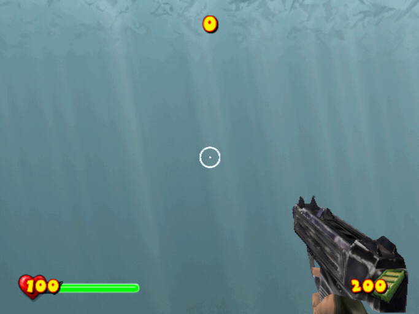
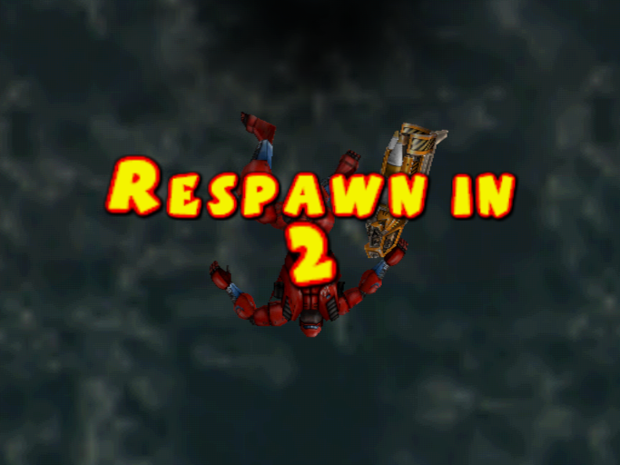
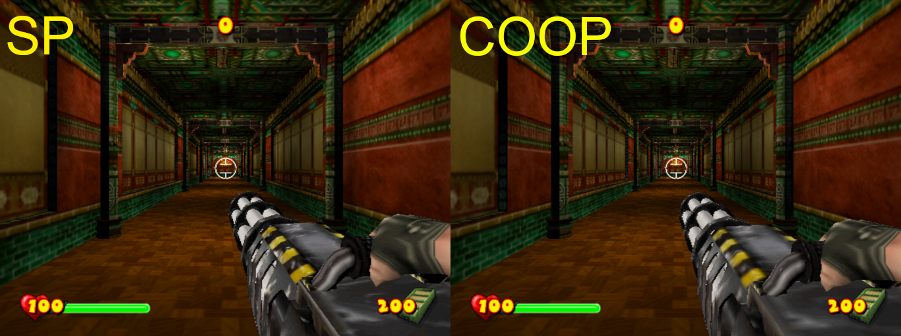

In this section, I will be only explaining what cheat codes do. The codes are available in .pnach files for use with PCSX2 Emulator.
Cheat codes need to be renamed into (GAME_CRC).pnach. PCSX2 can read multiple .pnach files of the same CRC and with line added so you can have multiple .pnach's in the same game. To do it, simply add a line at the end (ex. CRC-something.pnach).
Guide for using PNACHIf you need the cheat codes in RAW format, simply do these steps:
1. Use "Find and Replace" to replace the lines "patch=1,EE," with "" (aka. NOTHING).
2. Repeat for the lines "//".
3. Replace the lines ",extended," with " " (aka. SPACEBAR).
If you want to convert the codes into format of your Cheat Device (Action Replay, Codebreaker, Gameshark, etc.), you will need the Omniconvert app.
If you wish to download the PNACH but it constantly opens as the text file, use the "Right Click > Save Link As ..." trick.
- Final Release (NTSC-U) = 155466E8.pnach
- Final Release (PAL-E) = 2CC13DED.pnach
Makes the game run at 60 FPS.
Alternative version of the code was kept for future reference and can be used if the current one doesn't work.
Enables switching between single or dual Deagles or Uzis.
Makes multiplayer model appear in Single Player.
Enable getting medals on Easy difficulty. It's even harder to get Gold than on Normal.
Don't go back to the checkpoint and just respawn and continue instead.
Like the title sas, the players won't be auto-teleported but this can make other player stuck.
Enable the desired texture quality. The sharp ones which are used in SP may produce lags in COOP.
1 = Textures are blurred (COOP)
0 = Textures are sharp (SP)
Enable (1) for COOP like; Disable (0) for SP like.
In other words, if this code is enabled, any code below that is enabled will be COOP like; if the code is disabled, any code below that is enabled will be SP like.
PS2: Use Action Replay MAX disc or Codebreaker disc and import the save files.
PC: Use software called MyMC to import the save files to the PCSX2 memory card.
PC TO PS2: After the step above, convert the memory card to a folder and copy the save file folder onto a USB and then onto PS2.